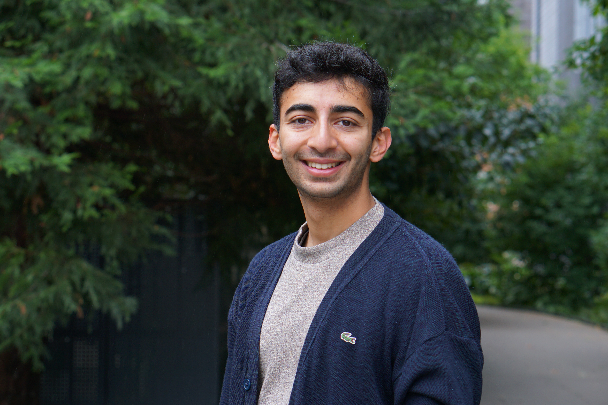

I'm a Master's Student in Biostatistics at the University of Washington. I am broadly interested in advancing population health via research in global health, clinical solutions, and general healthcare delivery.
While pursuing my Bachelor's degree at the University of Georgia, I studied health systems through economics and policy research, examining topics like the impacts of rural hospital closures on local communities, the benefits of banning surprise medical billing for family savings, and the need to support healthcare providers serving low-income communities during the COVID-19 pandemic. I also built a knowledge base in biology and computer science, reinforced by internships and software development work for a motion processing study in a neuroscience lab.
After graduating, I worked as a technical product manager for Deloitte and Capital One, spending most of that time helping design and implement Medicaid benefits system in the public sector. Before starting graduate school, I also became certified and worked full-time as an Emergency Medical Technician, gaining more direct exposure to the US healthcare system and its impacts on patients, providers, social workers, and others.
Going forward, I hope to use my graduate biostatistical training, my existing professional experience, and my medical exposure to advance evidence-based healthcare solution to serve vulnerable populations.
For more information about me, please check out my resume, or reach out via email or linkedin.
Longer CV
Education
Master of Science, Biostatistics, University of Washington, Seattle, WA
Expected March 2028
Bachelor of Arts, Economics, University of Georgia, Athens, GA
May 2021
- Minor: Biology | Certificate: Computing (Java, C++) | GPA: 3.88/4
Professional Experience
Product Manager, Marketing Data, Capital One,
New York, NY Jul 2024–Oct 2025
- Owned two enterprise data platforms (Customer Data Platform and Audience Platform) supporting data unification and segmentation of 50M+ customers, combining real-time data with nightly batch sources across 1000+ features.
- Partnered with data science teams to onboard ML propensity scores and model validation datasets into production pipelines.
- Designed and prioritized 20+ new data capabilities and rule automations with a dedicated software engineering team, reducing campaign launch times by >80%.
Technology Consultant, Medicaid Benefits Automation, Deloitte
Aug 2021–Jul 2024
- Designed and implemented state Medicaid platforms serving 100K+ residents; oversaw 80+ feature deployments, including enrollment automation and outcome monitoring.
- Reduced enrollment wait-times from weeks to <24 hrs and user-reported incidents by 90% via SQL-based data validation scripts, Oracle rules engine implementation, robust testing, and improved system documentation.
- Conducted 80+ system design sessions with state leadership. Translated technical root causes of over 400+ production issues into clear narratives for non-technical stakeholders.
- Directed agile ceremonies for 10+ engineers, ensuring on-time delivery of platform releases.
Health Policy Intern, Center for American Progress,
Washington, D.C. May–Aug 2020
- Researched community impacts of COVID-19 reopening, vaccine manufacturing, and relief bills.
- Co-authored column on financial relief for low-income healthcare provider (Health Care Providers in Georgia's Low-Income Communities Need Financial Relief).
Software Engineer Intern, Grubhub,
Chicago, IL May–Aug 2019
- Developed backend solutions in Java and NoSQL databases; wrote unit/end-to-end tests; optimized data structures for restaurants, customers, menus, etc.
Research Experience
Senior Thesis, Economics Dept. (Dr. Matt Knepper), University of Georgia
Jan–May 2021
- The Effect of Surprise Medical Bill Bans on Family Healthcare Expenditures.
- Designed log-linear multivariable model in R to demonstrate significant effects of state-level bans of surprise medical bills on family savings.
Research Lead, Sensorimotor Neuroscience Lab (Dr. Deborah Barany), University of Georgia
Aug 2018–May 2021
- Directed motion-processing and decision-making study to understand neurodegeneration.
- Engineered visual experiments and eye-tracker integration in MATLAB, conducted pilot studies, modeled pupil motion data with multivariable calculus and statistics.
- Presented findings at three undergraduate research symposia.
Research Assistant, Carl Vinson Institute of Government (Dr. Wes Clarke)
Jan–Dec 2019
- Co-authored white paper: Assessing the Impact of Hospital Closure on Manufacturing Jobs in Rural Counties. Used results to justify rescue funding for Georgia hospitals.
- Leveraged difference-in-differences linear regression with county-level fixed effects. Analyzed Census County Business Patterns data in R.
Research Assistant, Economics Dept. (Dr. Meghan Skira), University of Georgia
Aug 2017–May 2018
- Compiled and processed 50 state Medicaid Home and Community-Based (HCBS) program data in Stata for causal analysis on long-term care policy. Poster at undergraduate research symposium.
Medical Experience
Emergency Medical Technician, Royal Ambulance,
San Francisco, CA May–Sept 2026
- Provided patient care across 150+ transports, including first aid, vitals, mental assessment, oxygen, suctioning, and basic stabilization.
- Practiced de-escalation & calm communication in high-stress situations with patients, families, staff, and bystanders.
- Received and delivered comprehensive medical reports to nurses, doctors, and social workers.
- Worked extensively with providers, social workers, and caregivers, learning about the myriad of barriers each face in navigating treatments, insurance approval, pre-hospital care, long-term support, and other health system encounters.
Leadership and Service
Terry Analytics Lab, UGA | Volunteer Econometrics Assistant
Aug 2020–May 2021
- Assisted students with econometrics/statistics coursework in pilot year of volunteer-run lab.
- Advised on methods for students’ applied projects. Reviewed datasets, models, and statistical code (Stata/R); held office hours to clarify statistical methods.
Serve UGA | Executive Director (Jan–Dec 2020) | Director of Community Service (Jan–Dec 2019)
- Directed 25-member team coordinating weekly volunteer events at 7 local nonprofits, addressing housing, domestic violence, food insecurity, and other social equity issues. Emphasized meetings with community partners, volunteer trainings, pre-research and post-reflection on social issues.
- Co-chaired planning committee for university’s largest service event (300+ students).
- Chaired networking event for 40 service-based student organizations.
IMPACT Service Breaks | Site Leader
Mar 2018–Mar 2020
- Organized two week-long trips centered around shelter/housing access and environmental justice.
- Participated in weekly training meetings to lead social justice discussions and manage crises on trips; during the trips, facilitated daily service events and nightly 3-hour reflections.
Research Presentations
- Task-Irrelevant Pursuit Study, UGA CURO Symposium, Apr 2021
- Engaging Smooth Pursuit Following a Decision-Related Perturbation to Understand How Motor and Decision Signals Affect Motion Processing, UGA CURO Symposium, Apr 2020
- The Utility of Mapping Functional Areas of the Brain for Understanding Neurological Deficits, UGA CURO Symposium, Apr 2019
- Nursing Home or Stay Home: The Impact of HCBS Waivers on Long-Term Care Choices, UGA CURO Symposium, Apr 2019